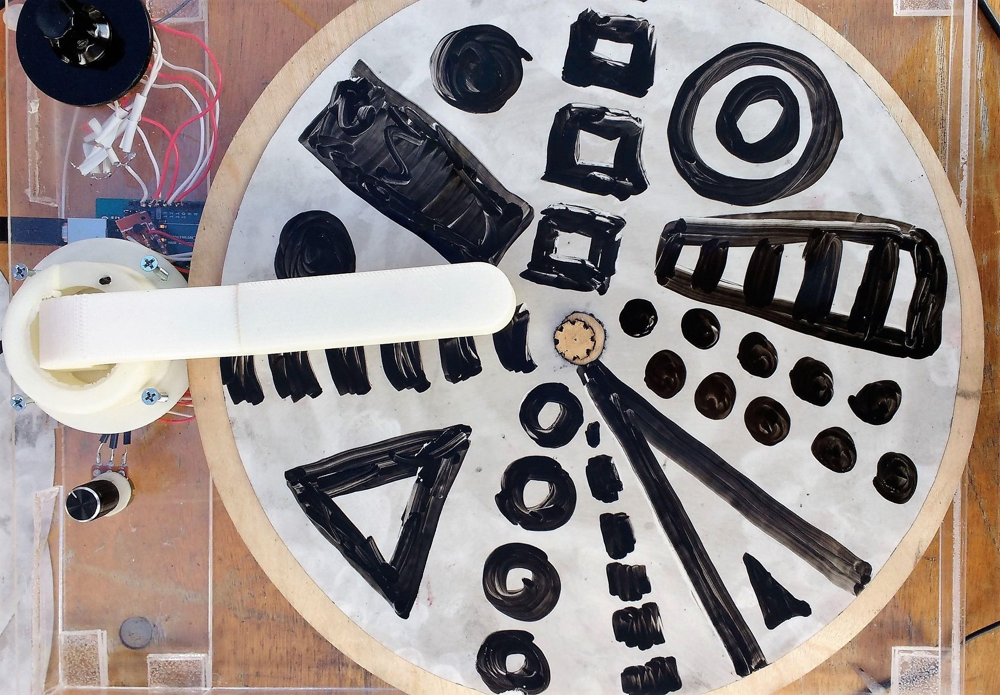
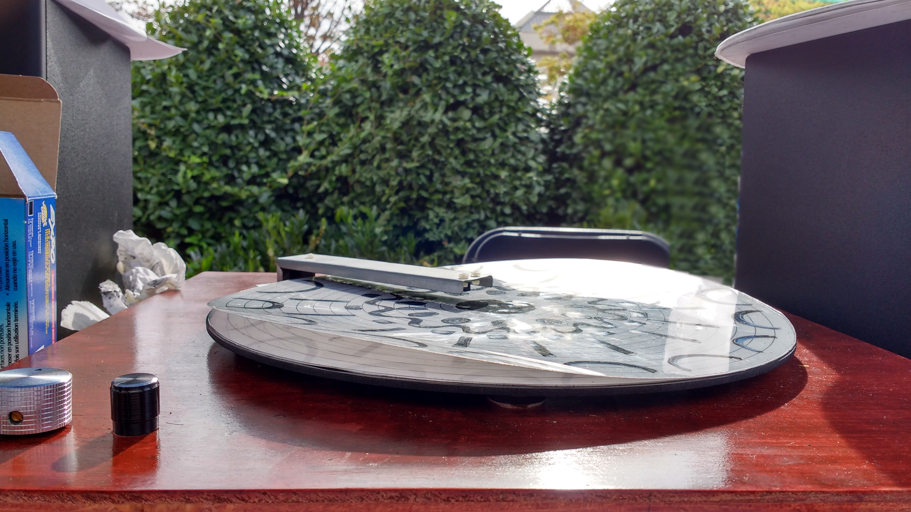
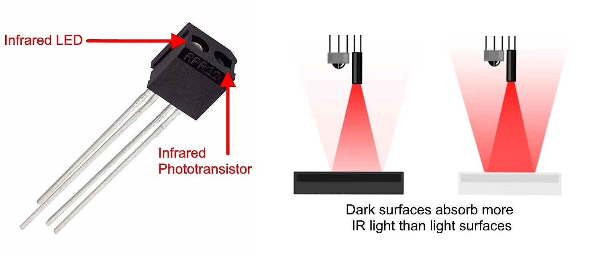

Optical Turntable 2.0
Optical Turntable 1.0
Featuring a number of aesthetic improvements, the Optical Turntable 2.0 uses a mahogany-stained wood base, under which are housed an two Arduinos (one for sensor I/O and one for motor control) and a motor control driver. We designed a PCB (mounted under the steel arm) which holds all of the IR sensor circuits.
Black marks on a white surface are detected by RPR-220 infrared sensors -- the same technology that allows robots to follow lines, for example. Infrared (IR) sensors are composed of an IR-emitting light (an LED, to be more specific), and an IR-receiving phototransistor which detects the quantity of light in front of it. When the IR LED emits a light onto the drawing, the phototransistor detects how much light bounced back. This is how these sensors detect black vs. white. This information is all sent to a computer, where it is analyzed and processed to play sounds whenever there is a black mark.
Project Music Connector's Optical Turntable is proudly sponsored by Advanced Circuits.